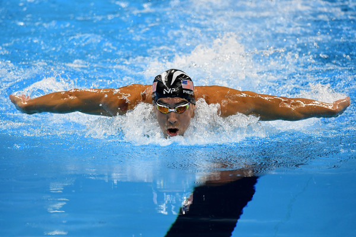

Michael Phelps it's also known as one of the bests swimmers in the world having a record of the most olympic medals won by any athlete earning a total of 23 gold medals and 13 individual ones earned in the olynpic games. When he broke the record in the 100-metter butterfly at the 2009 world championship he swam at an astonishngly speedy of 5.5 miler per hour.
Brief History
In the beginnning
Michael phelps was born in Towson, Maryland on june 30, Phelps was initially fearful of putting the face in the wate. However he overcame this discomfort and, in 1996 was inspired by the perfomances of Tom Malchow and Tom Dolan during the Olympic games in Atlanta, Georigia, he joined the North Baltimore Athletic Club, where he met Bob Bowman, the coach who would see him through the highs and lows of the rest of his career.
2001 Nationals and Fina world championships
During World Championship Trials at the Phillips 66 Nationals, Phelps broke his first world record in the same event in which he had competed at the Sydney Games, he also became the youngest male swimmer to break a WR – a title previously held by none other than Ian Thorpe, who had broken the 400-meter freestyle WR at 16 years and 10 months of age, he went on to the 2001 World Championships in Fukuoka, Japan, where he broke his record again, and solidified a tight grip on the 200-meter butterfly.
2007 & 2008 Fina World championship and Olympic games
In 2007 he acknowledge his plans to beat the record of most first place finishes in a single Olympic, then held by Mark Spitz, who won seven gold medals in the 1972 Munich games, in the months leading up to the 2008 Beijing Olympic Games, neither Mark Spitz nor Ian Thorpe expressed support or belief in their would-be protégé. Phelps proved them wrong, blasting competition out of the water eight times in a row. He also beat Serbian Milorad Čavić in the 100 fly by 0.01 seconds. In the end, it was determined that the Omega Timers registered Phelps’ powerful touch first, rather than Čavić’s light glide ( whose challenged Michael to a rematch in 2009.
2001 World championship
2002 Pan pacific championship
2004 Summer Olympics
2007 World championship mid term
2008 Summer olympic Games
last summer Olympic games 2008 mid term
World championship
200m meter butterfly
200m midley
400m midley
4x100 m midley
100 m butterfly
Pacific championships
200m midley
400 m midley
400x100 m midley
200 m butterfly
4x200 midley
Summer Olympics
100m butterfly
200 m butterfly
200m midley
400 m midley
4x200 m freestyle
World championship mid term
200m freestyle
100m butterfly
200m butterfly
200m midley
400 m midley
Summer Games
200m freestyle
100m butterfly
200m butterfly
4x100 m freestyle
4x200 m freestyle
Contact us
To get more information about other athletics please submit